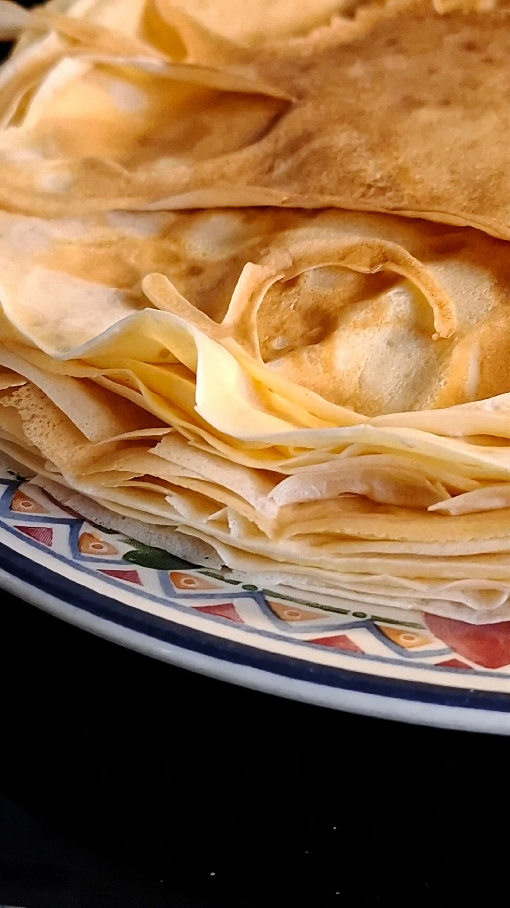
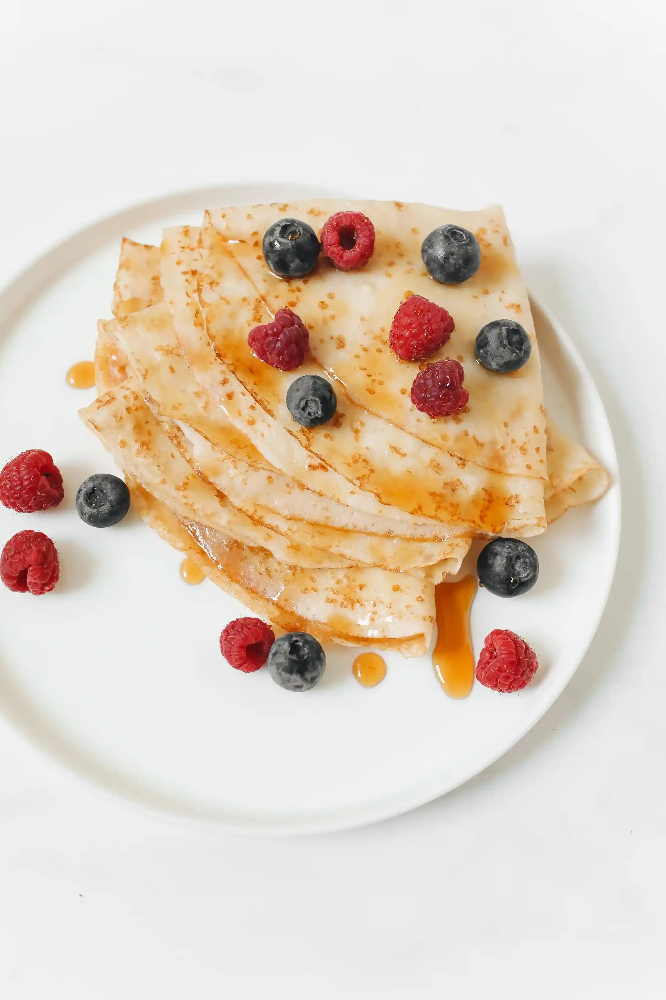
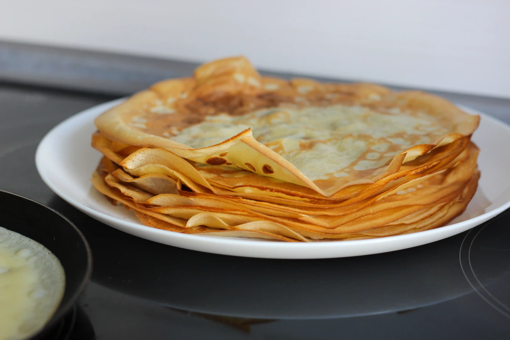
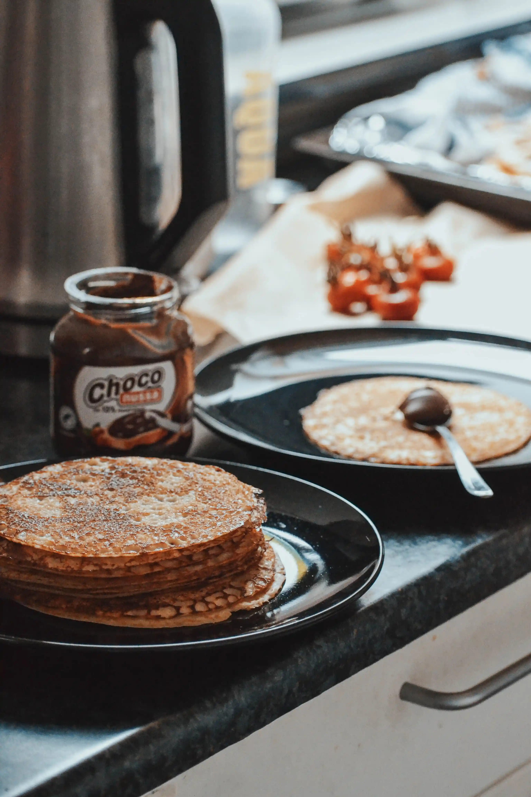
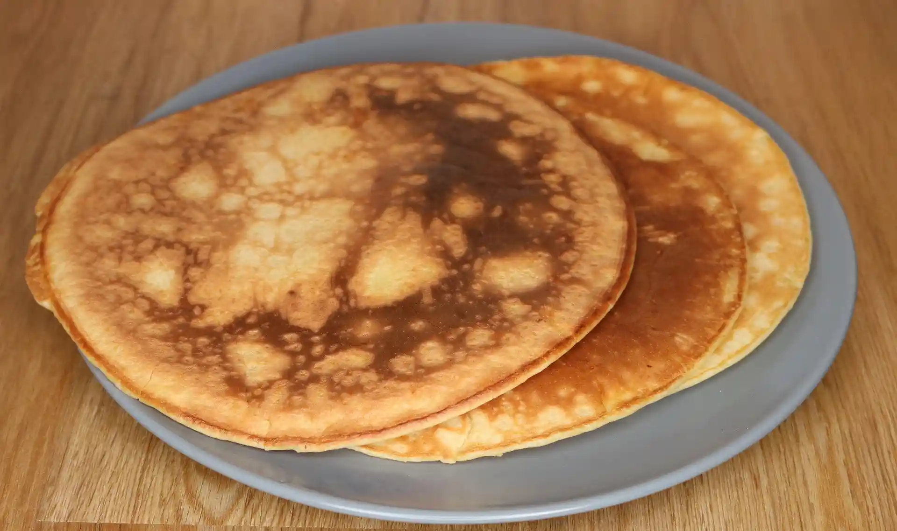

Apprendre à utiliser la molette
À quoi ça sert ?
💡 Astuce :
💡 Astuce :
Contacts
Nadia
Environ 1 230 000 résultats
✨ Réponse de l'IA
Pour faire des crêpes, il faut 250 g de farine, 4 œufs et 50 cl de lait. Mélange la farine et les œufs, puis ajoute le lait petit à petit. Fais cuire chaque crêpe 1 minute de chaque côté, dans une poêle chaude.
L'IA peut se tromper. Vérifie sur les sites.
Recettes facileshttps://www.recettes-faciles.fr › crepes
La pâte à crêpes la plus simple : de la farine, des œufs, du lait. Prête en 10 minutes, sans repos.
Images




Autres questions posées
La farine de blé classique (type 45 ou 55) convient très bien.
Ce n'est pas obligatoire, mais une heure de repos rend les crêpes plus moelleuses.
Environ 12 à 15 crêpes, selon la taille de la poêle.
Cuisine TVhttps://www.cuisine-tv.fr › video
Regardez notre vidéo pas à pas pour des crêpes fines et dorées.
Recettes du mondehttps://www.recettes-du-monde.fr › bretagne
Découvrez l'histoire des crêpes en Bretagne et la recette des galettes.
La cuisine de Mamiehttps://www.lacuisinedemamie.fr › crepes
Ma recette de crêpes, simple et inratable, pour 4 personnes.

👵 La cuisine de Mamie
Les crêpes de Mamie
👥 4 personnes⏱️ 10 min🔥 20 min
Les crêpes, c'est la recette de mon enfance. Voici ma recette simple, pour un goûter en famille.
Le petit secret de Mamie : laisse reposer la pâte une heure. Les crêpes seront encore meilleures !
Ingrédients
Préparation
Vos photos